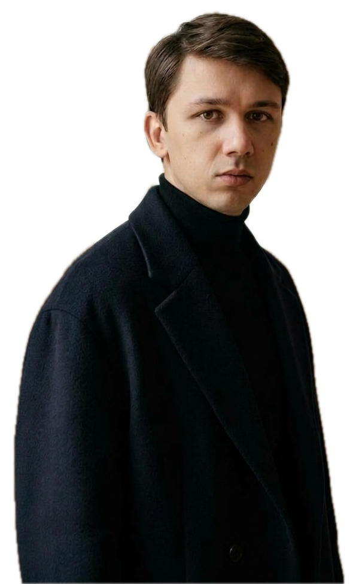

Визуальный дизайн
Сетки, отступы, шрифтовые пары и контраст — то, из чего складывается аккуратная страница.

Меня зовут Владислав. Я только начинаю свой путь в веб-дизайне и учусь делать сайты, которые выглядят аккуратно и понятны с первого взгляда.
Этот сайт — одна из моих первых работ. Я собрал его сам и буду развивать вместе с собой: по мере учёбы здесь будут появляться новые проекты.
Решил заниматься веб-дизайном и начал разбираться в основах: композиция, типографика, цвет.
Сделал и опубликовал этот сайт на GitHub Pages — от идеи до вёрстки.
Собрать портфолио из реальных работ и показать их здесь.
Сетки, отступы, шрифтовые пары и контраст — то, из чего складывается аккуратная страница.
Чтобы мои макеты превращались в живые страницы, которые работают и на телефоне.
Как сделать так, чтобы человек на сайте сразу понимал, куда смотреть и что нажать.
Есть идея или совет?